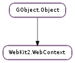

| static | get_default() |
| clear_cache() | |
| download_uri(uri) | |
| get_cache_model() | |
| get_cookie_manager() | |
| get_favicon_database() | |
| get_favicon_database_directory() | |
| get_plugins(cancellable, callback, *user_data) | |
| get_plugins_finish(result) | |
| get_security_manager() | |
| get_spell_checking_enabled() | |
| get_spell_checking_languages() | |
| get_tls_errors_policy() | |
| prefetch_dns(hostname) | |
| register_uri_scheme(scheme, callback, *user_data) | |
| set_additional_plugins_directory(directory) | |
| set_cache_model(cache_model) | |
| set_disk_cache_directory(directory) | |
| set_favicon_database_directory(path) | |
| set_preferred_languages(languages) | |
| set_spell_checking_enabled(enabled) | |
| set_spell_checking_languages(languages) | |
| set_tls_errors_policy(policy) | |
| set_web_extensions_directory(directory) |
None
| Name | Parameters | Return | Description |
|---|---|---|---|
| download-started | WebKit2.Download | This signal is emitted when a new download request is made. |
| Name | Type | Access |
|---|---|---|
| parent | GObject.Object | r |
Bases: GObject.Object
| Returns: | a WebKit2.WebContext |
|---|---|
| Return type: | WebKit2.WebContext |
Gets the default web context
Clears all resources currently cached. See also WebKit2.WebContext.set_cache_model ().
| Parameters: | uri (str) – the URI to download |
|---|---|
| Returns: | a new WebKit2.Download representing the the download operation. |
| Return type: | WebKit2.Download |
Requests downloading of the specified URI string. The download operation will not be associated to any WebKit2.WebView, if you are interested in starting a download from a particular WebKit2.WebView use WebKit2.WebView.download_uri () instead.
| Returns: | the current WebKit2.CacheModel |
|---|---|
| Return type: | WebKit2.CacheModel |
Returns the current cache model. For more information about this value check the documentation of the function WebKit2.WebContext.set_cache_model ().
| Returns: | the WebKit2.CookieManager of context. |
|---|---|
| Return type: | WebKit2.CookieManager |
Get the WebKit2.CookieManager of context.
| Returns: | the WebKit2.FaviconDatabase of context. |
|---|---|
| Return type: | WebKit2.FaviconDatabase |
Get the WebKit2.FaviconDatabase associated with context.
To initialize the database you need to call WebKit2.WebContext.set_favicon_database_directory ().
| Returns: | the path of the directory of the favicons database associated with context, or None. |
|---|---|
| Return type: | str |
Get the directory path being used to store the favicons database for context, or None if WebKit2.WebContext.set_favicon_database_directory () hasn’t been called yet.
This function will always return the same path after having called WebKit2.WebContext.set_favicon_database_directory () for the first time.
| Parameters: |
|
|---|
Asynchronously get the list of installed plugins.
When the operation is finished, callback will be called. You can then call WebKit2.WebContext.get_plugins_finish () to get the result of the operation.
| Parameters: | result (Gio.AsyncResult) – a Gio.AsyncResult |
|---|---|
| Raises: | GLib.GError |
| Returns: | a GLib.List of WebKit2.Plugin. You must free the GLib.List with GLib.List.free () and unref the WebKit2.Plugin s with GObject.Object.unref () when you’re done with them. |
| Return type: | [WebKit2.Plugin] |
Finish an asynchronous operation started with WebKit2.WebContext.get_plugins.
| Returns: | the WebKit2.SecurityManager of context. |
|---|---|
| Return type: | WebKit2.SecurityManager |
Get the WebKit2.SecurityManager of context.
| Returns: | True If spell checking is enabled, or False otherwise. |
|---|---|
| Return type: | bool |
Get whether spell checking feature is currently enabled.
| Returns: | A None-terminated array of languages if available, or None otherwise. |
|---|---|
| Return type: | [str] |
Get the the list of spell checking languages associated with context, or None if no languages have been previously set.
See WebKit2.WebContext.set_spell_checking_languages () for more details on the format of the languages in the list.
| Returns: | a WebKit2.TLSErrorsPolicy |
|---|---|
| Return type: | WebKit2.TLSErrorsPolicy |
Get the TLS errors policy of context
| Parameters: | hostname (str) – a hostname to be resolved |
|---|
Resolve the domain name of the given hostname in advance, so that if a URI of hostname is requested the load will be performed more quickly.
| Parameters: |
|
|---|
Register scheme in context, so that when an URI request with scheme is made in the WebKit2.WebContext, the WebKit2.URISchemeRequestCallback registered will be called with a WebKit2.URISchemeRequest. It is possible to handle URI scheme requests asynchronously, by calling GObject.Object.ref () on the WebKit2.URISchemeRequest and calling WebKit2.URISchemeRequest.finish () later when the data of the request is available or WebKit2.URISchemeRequest.finish_error () in case of error.
static void
about_uri_scheme_request_cb (WebKitURISchemeRequest *request,
gpointer user_data)
{
GInputStream *stream;
gsize stream_length;
const gchar *path;
path = webkit_uri_scheme_request_get_path (request);
if (!g_strcmp0 (path, "plugins")) {
/* Create a GInputStream with the contents of plugins about page, and set its length to stream_length */
} else if (!g_strcmp0 (path, "memory")) {
/* Create a GInputStream with the contents of memory about page, and set its length to stream_length */
} else if (!g_strcmp0 (path, "applications")) {
/* Create a GInputStream with the contents of applications about page, and set its length to stream_length */
} else if (!g_strcmp0 (path, "example")) {
gchar *contents;
contents = g_strdup_printf ("<html><body><p>Example about page</p></body></html>");
stream_length = strlen (contents);
stream = g_memory_input_stream_new_from_data (contents, stream_length, g_free);
} else {
GError *error;
error = g_error_new (ABOUT_HANDLER_ERROR, ABOUT_HANDLER_ERROR_INVALID, "Invalid about:%s page.", path);
webkit_uri_scheme_request_finish_error (request, error);
g_error_free (error);
return;
}
webkit_uri_scheme_request_finish (request, stream, stream_length, "text/html");
g_object_unref (stream);
}
| Parameters: | directory (str) – the directory to add |
|---|
Set an additional directory where WebKit will look for plugins.
| Parameters: | cache_model (WebKit2.CacheModel) – a WebKit2.CacheModel |
|---|
Specifies a usage model for WebViews, which WebKit will use to determine its caching behavior. All web views follow the cache model. This cache model determines the RAM and disk space to use for caching previously viewed content .
Research indicates that users tend to browse within clusters of documents that hold resources in common, and to revisit previously visited documents. WebKit and the frameworks below it include built-in caches that take advantage of these patterns, substantially improving document load speed in browsing situations. The WebKit cache model controls the behaviors of all of these caches, including various WebCore caches.
Browsers can improve document load speed substantially by specifying WebKit2.CacheModel.WEB_BROWSER. Applications without a browsing interface can reduce memory usage substantially by specifying WebKit2.CacheModel.DOCUMENT_VIEWER. The default value is WebKit2.CacheModel.WEB_BROWSER.
| Parameters: | directory (str) – the directory to set |
|---|
Set the directory where disk cache files will be stored This method must be called before loading anything in this context, otherwise it will not have any effect.
| Parameters: | path (str or None) – an absolute path to the icon database directory or None to use the defaults |
|---|
Set the directory path to be used to store the favicons database for context on disk. Passing None as path means using the default directory for the platform (see GLib.get_user_data_dir ()).
Calling this method also means enabling the favicons database for its use from the applications, so that’s why it’s expected to be called only once. Further calls for the same instance of WebKit2.WebContext won’t cause any effect.
| Parameters: | languages ([str] or None) – a None-terminated list of language identifiers |
|---|
Set the list of preferred languages, sorted from most desirable to least desirable. The list will be used to build the “Accept-Language” header that will be included in the network requests started by the WebKit2.WebContext.
| Parameters: | enabled (bool) – Value to be set |
|---|
Enable or disable the spell checking feature.
| Parameters: | languages ([str]) – a None-terminated list of spell checking languages |
|---|
Set the list of spell checking languages to be used for spell checking.
The locale string typically is in the form lang_COUNTRY, where lang is an ISO-639 language code, and COUNTRY is an ISO-3166 country code. For instance, sv_FI for Swedish as written in Finland or pt_BR for Portuguese as written in Brazil.
You need to call this function with a valid list of languages at least once in order to properly enable the spell checking feature in WebKit.
| Parameters: | policy (WebKit2.TLSErrorsPolicy) – a WebKit2.TLSErrorsPolicy |
|---|
Set the TLS errors policy of context as policy